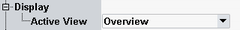

Use the hotkeys associated with the "Display" softkey to enable and scale the diagrams, and select the trace types to be displayed.

Selects the diagram type to be displayed.
CONFigure:WPAN:MEAS<i>:DISPlay